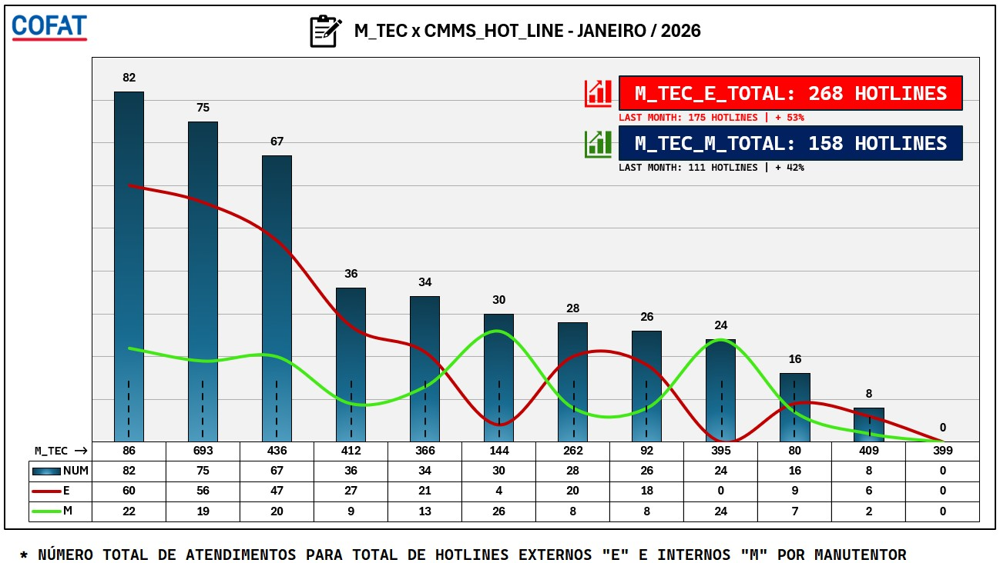
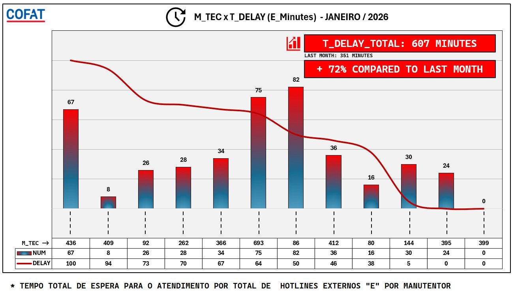
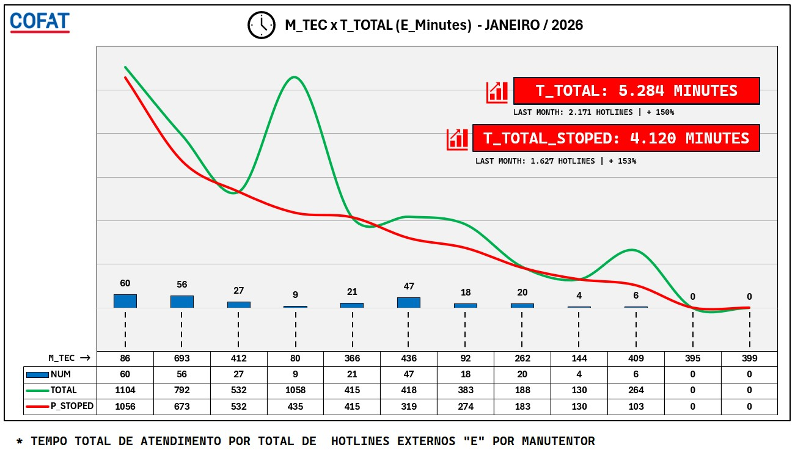
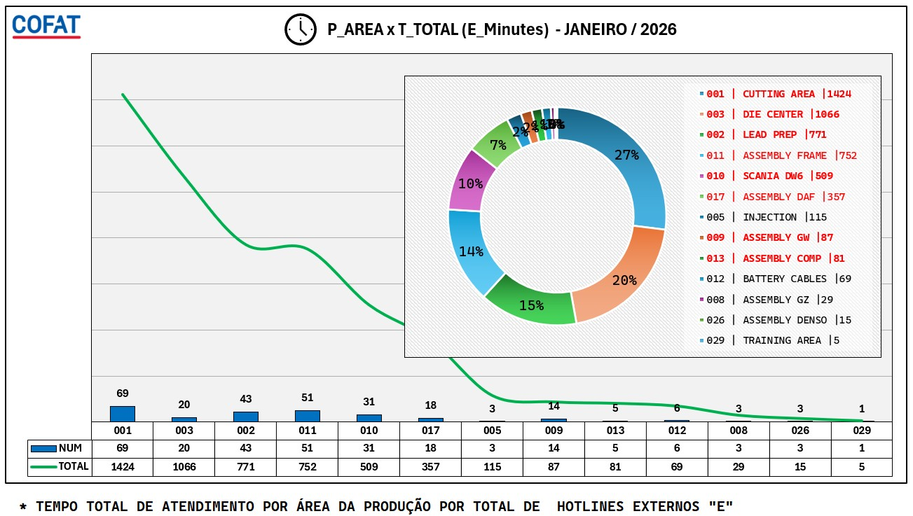
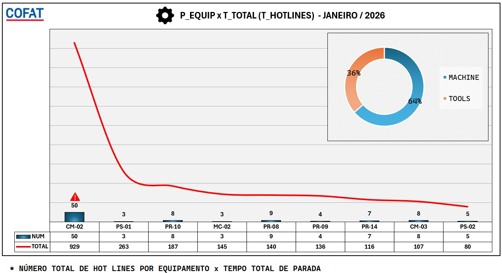
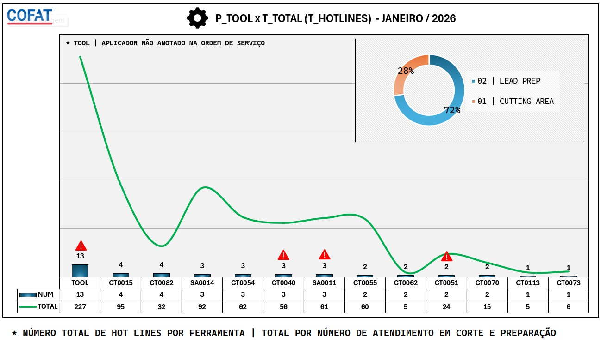
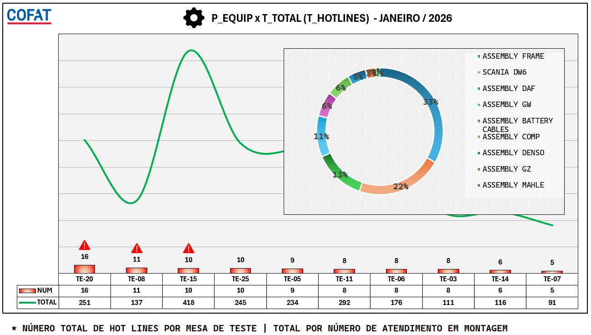
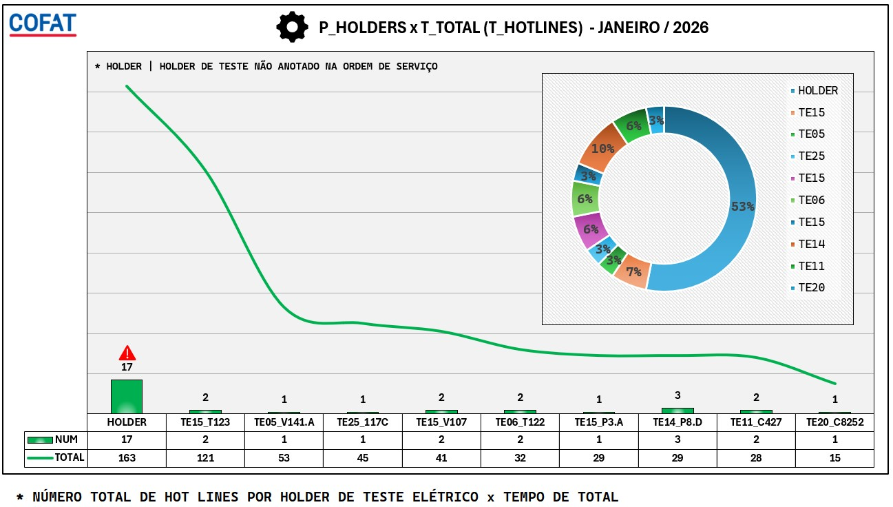

[01] - M_TEC x CMMS_HOT_LINE - MANUTENÇÃO TOTAL

* GRÁFICO APRESENTA A INFORMAÇÃO SOBRE A QUANTIDADE DE ORDENS DE SERVIÇOS (ORDENS INTERNAS DO TIPO "M" E ORDENS CORRETIVAS EXTERNAS DO TIPO "E" ) ATENDIDAS POR MANUTENTOR
* RESULTADO DO MÊS DE JANEIRO FOI PIOR COMPARADO AO MÊS ANTERIOR, COM UM AUMENTO DE 72% NO TEMPO DE ESPERAR PARA O INÍCIO DO ATENDIMENTO JAN/2026
* RESULTADO DO MÊS DE JANEIRO FOI PIOR COMPARADO AO MÊS ANTERIOR, COM UM AUMENTO DE 72% NO TEMPO DE ESPERAR PARA O INÍCIO DO ATENDIMENTO JAN/2026
[02] - M_TEC x T_DELAY (E_Minutes) - MANUTENÇÃO TOTAL

* GRÁFICO APRESENTA A INFORMAÇÃO SOBRE A QUANTIDADE TOTAL DO TEMPO DE ESPERA (EM MINUTOS) PARA INICIAR O ATENDIMENTO AO EQUIPAMENTO x QUANTIDADE DE ORDENS DE SERVIÇO DO TIPO "E" ATENDIDADAS POR MANUTENTOR
* RESULTADO DO MÊS DE JANEIRO (607 MINUTOS) FOI PIOR COMPARADO AO MÊS ANTERIOR (351 MINUTOS), COM UM AUMENTO DE 72% NO TEMPO DE ESPERA PARA O INÍCIO DO ATENDIMENTO JAN/2026
* RESULTADO DO MÊS DE JANEIRO (607 MINUTOS) FOI PIOR COMPARADO AO MÊS ANTERIOR (351 MINUTOS), COM UM AUMENTO DE 72% NO TEMPO DE ESPERA PARA O INÍCIO DO ATENDIMENTO JAN/2026
[03] - M_TEC x T_TOTAL (E_Minutes) - MANUTENÇÃO TOTAL

* GRÁFICO APRESENTA A INFORMAÇÃO SOBRE O TEMPO TOTAL (T_TOTAL / EM MINUTOS) DE ATENDIMENTO A ORDENS DE SERVIÇO DO TIPO "E" x O TEMPO TOTAL (T_TOTAL_STOPED / EM MINUTOS) DE ATENDIMENTO A ORDENS DE SERVIÇO DO TIPO "E" EM QUE HOUVE PARADA DE PRODUÇÃO x QUANTIDADE DE ORDENS ATENDIDA NO PERÍODO POR MANUTENTOR
* RESULTADO DO MÊS DE JANEIRO (5.284 MINUTOS) FOI PIOR COMPARADO AO MÊS ANTERIOR (2.171 MINUTOS), COM UM AUMENTO DE 150% NO TEMPO TOTAL DE ATENDIMENTO E UM AUMENTO DE 153% NO TEMPO DE ATENDIMENTO COM PARADA DE PRODUÇÃO, MÊS ANTERIOR (1.627 MINUTOS) ATUAL (4.120 MINUTOS) JAN/2026
* RESULTADO DO MÊS DE JANEIRO (5.284 MINUTOS) FOI PIOR COMPARADO AO MÊS ANTERIOR (2.171 MINUTOS), COM UM AUMENTO DE 150% NO TEMPO TOTAL DE ATENDIMENTO E UM AUMENTO DE 153% NO TEMPO DE ATENDIMENTO COM PARADA DE PRODUÇÃO, MÊS ANTERIOR (1.627 MINUTOS) ATUAL (4.120 MINUTOS) JAN/2026
[04] - P_AREA x T_TOTAL (E_Minutes) - SEGMENTADO POR ÁREA DE PRODUÇÃO

* GRÁFICO APRESENTA A INFORMAÇÃO SOBRE O TEMPO TOTAL (EM MINUTOS) DE ATENDIMENTO A ORDENS DE SERVIÇO DO TIPO "E" POR ÁREA / SEGMENTO DE PRODUÇÃO x QUANTIDADE DE ORNDENS DE SERVIÇO EM CADA ÁREA
* ÁREAS DESTACADAS NA COR VERMELHO TIVERAM RESULTADO PIOR COMPARADO AO MÊS ANTERIOR, COM AUMENTO NO TEMPO DE ATENDIMENTO EM CADA SEGMENTO
* ÁREAS DESTACADAS NA COR VERDE TIVERAM RESULTADO POSITIVO COMPARADO AO MÊS ANTERIOR
*ÁREAS DESTACAS NA COR PRETA FORAM INCLUÍDAS NO PERÍODO ATUAL OU NÃO HÁ DADOS PARAA COMPARAÇÃO COM O MÊS ANTERIROR UNIDADE_B2
* ÁREAS DESTACADAS NA COR VERMELHO TIVERAM RESULTADO PIOR COMPARADO AO MÊS ANTERIOR, COM AUMENTO NO TEMPO DE ATENDIMENTO EM CADA SEGMENTO
* ÁREAS DESTACADAS NA COR VERDE TIVERAM RESULTADO POSITIVO COMPARADO AO MÊS ANTERIOR
*ÁREAS DESTACAS NA COR PRETA FORAM INCLUÍDAS NO PERÍODO ATUAL OU NÃO HÁ DADOS PARAA COMPARAÇÃO COM O MÊS ANTERIROR UNIDADE_B2
[05] - P_EQUIP x T_TOTAL (T_HOTLINES) - ÁREA DE CORTE E PREPARAÇÃO

* NÚMERO TOTAL DE HOT LINES POR HOLDER DE TESTE ELÉTRICO x TEMPO DE TOTAL
UNIDADE_C1
RELATÓRIO DE DESEMPENHO - SETOR 06

* NÚMERO TOTAL DE HOT LINES POR HOLDER DE TESTE ELÉTRICO x TEMPO DE TOTAL
UNIDADE_C2
RELATÓRIO DE DESEMPENHO - SETOR 07

* NÚMERO TOTAL DE HOT LINES POR HOLDER DE TESTE ELÉTRICO x TEMPO DE TOTAL
UNIDADE_D1
RELATÓRIO DE DESEMPENHO - SETOR 08

* NÚMERO TOTAL DE HOT LINES POR HOLDER DE TESTE ELÉTRICO x TEMPO DE TOTAL
UNIDADE_D2